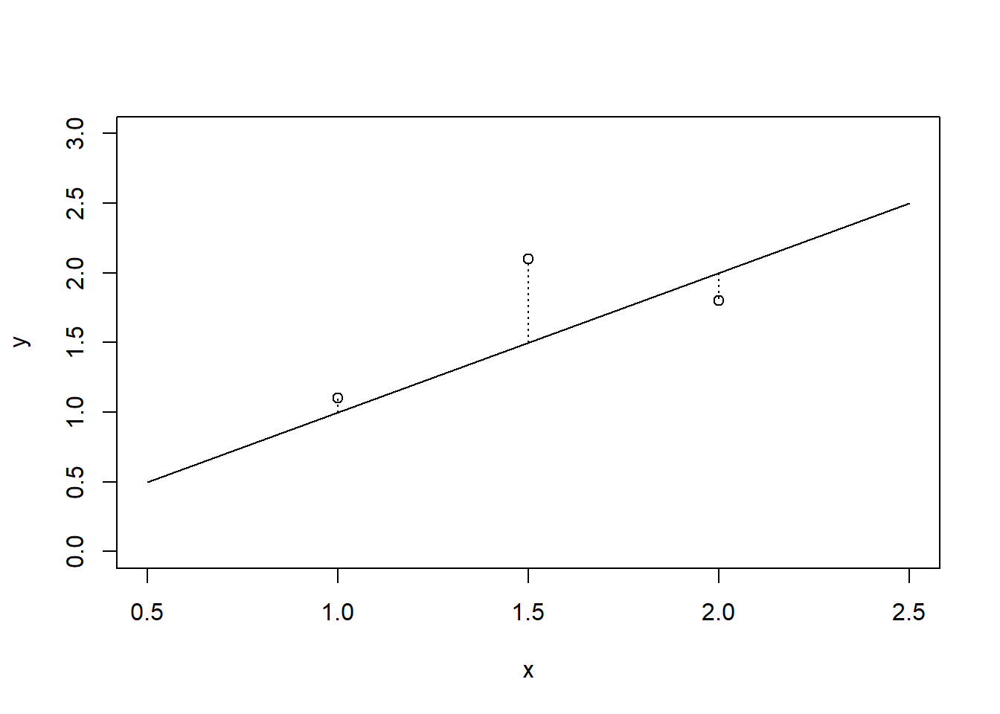
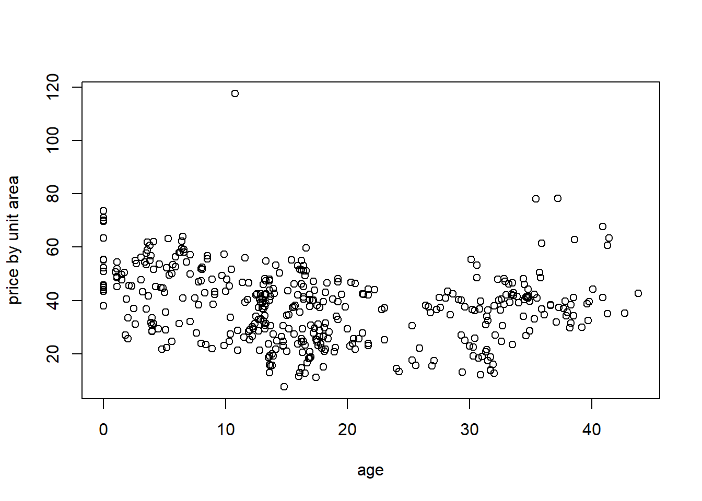
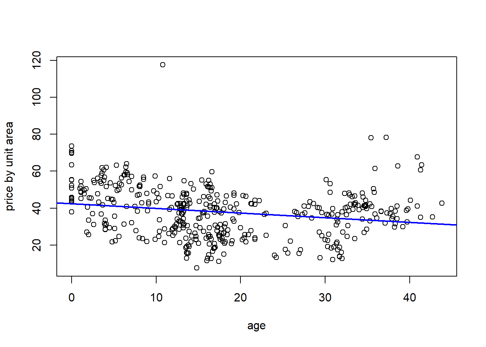
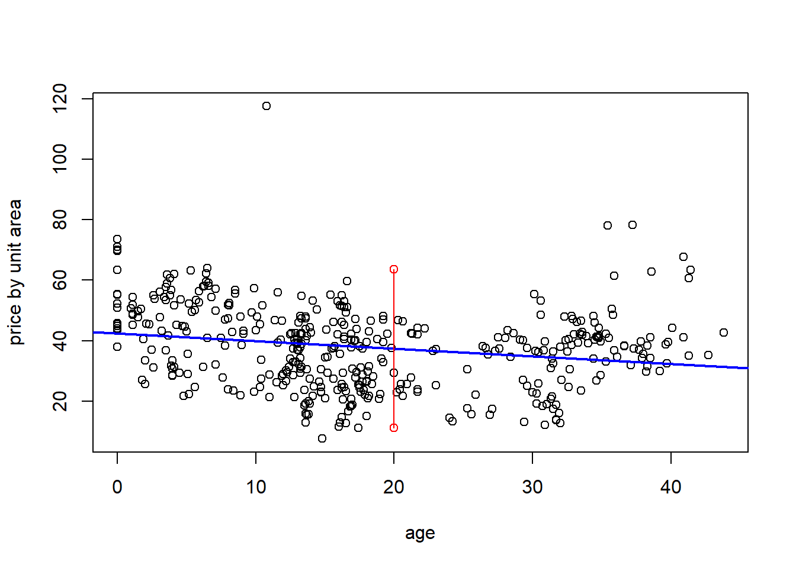
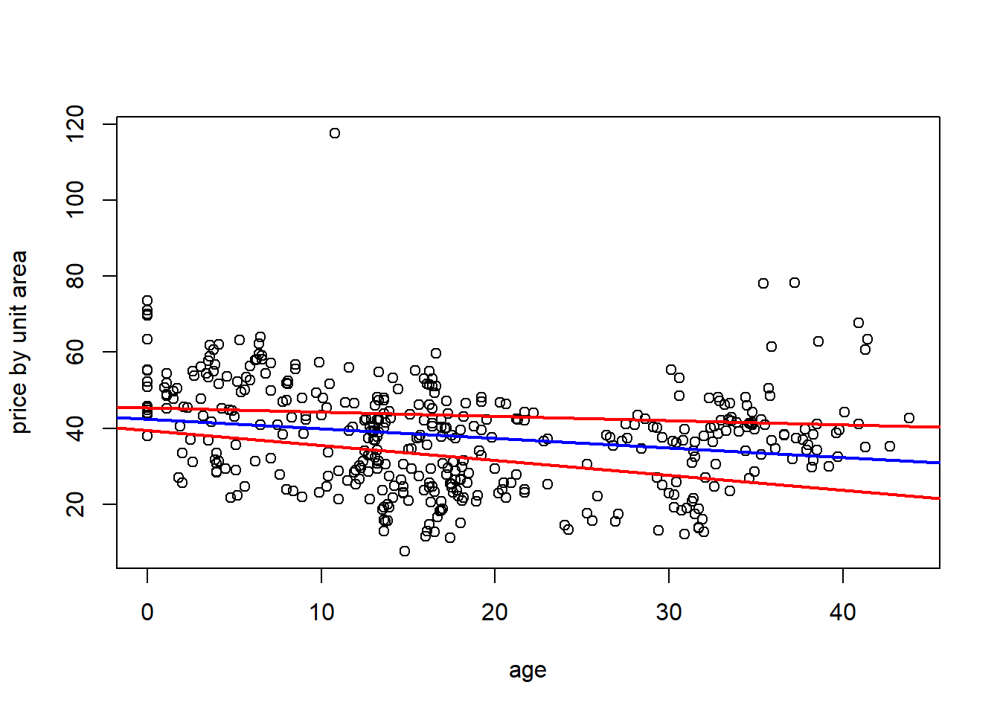
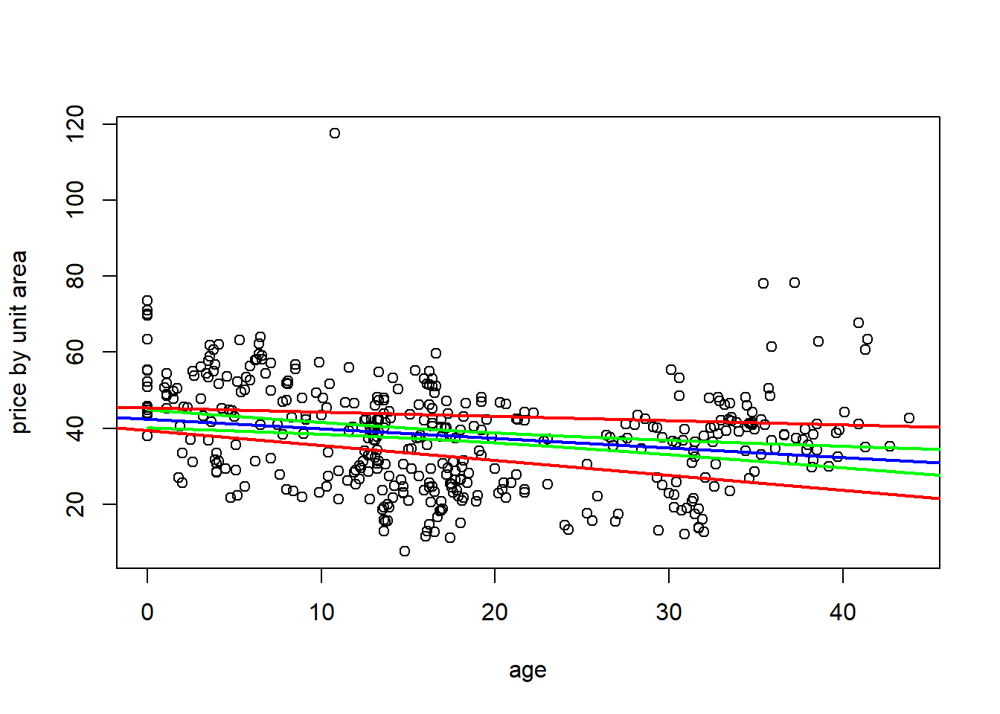

Chapter 8 Simple Linear Regression
In this chapter we consider estimation and inference of a random response, conditional on another observed variable—the independent variable, also called predictor or covariate.
8.1 Simple linear regression model
The simple linear regression model says that a random response \(Y_i\) has conditional mean \(\beta_0 + \beta_1 x_i\) given \(X_i = x_i\) where \(X_i\) may be a random variable. Moreover, the responses \(Y_i\), \(i = 1, \ldots, n\), are independent, with common variance \(\sigma^2\), and are normally distributed. This is commonly written using the following statistical notation:
\[Y_i = \beta_0 + \beta_1 x_i + \epsilon_i, \quad \epsilon_i\stackrel{iid}{\sim} N(0, \sigma^2)\]
where \(\epsilon_i\) is the “random residual”—what is left over after subtracting the mean from the response.
The model is “linear” because the mean \(E(Y_i|x_i) = \beta_0 + \beta_1 x_i\) is a linear function (a line in two dimensions \(y\) and \(x\)). The model is “simple” because it is the simplest line (two dimensions). Later we will expand the model by adding covariates, i.e., \(x_{1i}, x_{2i}, \ldots\), to the linear conditional mean function and call it multiple linear regression.
8.1.1 Estimation
We estimate \((\beta_0, \beta_1)\) simultaneously using the method of “least squares”. The method of least squares defines the line \(y = \beta_0 + \beta_1 x\) that is “closest” to the points \((y_i, x_i), i=1, \ldots, n\) is the one minimizing the sum of square vertical distances (residuals) from the points to the line: \[(\hat\beta_0, \hat\beta_1) = \arg\min_{(\beta_0, \beta_1)}\sum_{i=1}^n(y_i - \beta_0 - \beta_1x_i)^2.\] The plot below shows these residuals for three points (1.0,1.1), (1.5,2.1), and (2.0,1.8), compared to the line \(y=x\).
plot(c(1,1.5,2),c(1.1,2.1,1.8), xlab = 'x', ylab = 'y', main = '', xlim = c(0.5,2.5), ylim = c(0,3))
lines(c(0.5,2.5),c(0.5,2.5))
lines(c(1,1), c(1,1.1), lty = 3)
lines(c(1.5,1.5), c(1.5,2.1), lty = 3)
lines(c(2,2), c(2,1.8), lty = 3)
We can determine the estimators \((\hat\beta_0, \hat\beta_1)\) by minimizing the sum of squared residuals using calculus:
\[ \begin{aligned} \frac{\partial}{\partial\beta_0} \sum_{i=1}^n(y_i - \beta_0 - \beta_1x_i)^2 \\ & = -2\sum_{i=1}^n(y_i - \beta_0 - \beta_1x_i)\\ \text{set }0 &= -2\sum_{i=1}^n(y_i - \beta_0 - \beta_1x_i)\\ &\Rightarrow \hat\beta_0 = n^{-1}\sum_{i=1}^n(y_i - \beta_1x_i)\\ & = \bar y - \beta_1\bar x \end{aligned} \]
\[ \begin{aligned} \frac{\partial}{\partial\beta_1} \sum_{i=1}^n(y_i - \beta_0 - \beta_1x_i)^2 \\ & = -2 \sum_{i=1}^n x_i(y_i - \beta_0 - \beta_1x_i)\\ \text{set }0 &= -2 \sum_{i=1}^n x_i(y_i - \beta_0 - \beta_1x_i)\\ &\Rightarrow 0 = \sum_{i=1}^n (y_ix_i - x_i(\bar y - \beta_1 \bar x) - \beta_1 x_i^2)\quad \text{by substituting }\beta_0\\ & \beta_1\sum(x_i^2 - x_i\bar x) = \sum_{i=1}^n(y_ix_i - \bar y x_i)\\ &\Rightarrow \hat\beta_1 = \frac{\sum_{i=1}^n (y_ix_i) - n\bar y\bar x}{\sum_{i=1}^n (x_i^2) - n\bar x^2} = \frac{\sum_{i=1}^n [(y_i - \bar y)(x_i - \bar x)]}{\sum_{i=1}^n (x_i - \bar x)^2} \end{aligned} \] ### LSEs are unbiased
A nice property of the least squares method is that it produces unbiased estimators. Consider the expectation \(E(\hat\beta_1)\). Since the \(x_i'\)s are non-random, treat these as constants, and find \(\hat\beta_1\) is unbiased:
\[ \begin{aligned} E(\hat\beta_1) & = \frac{\sum_{i=1}^n E((y_i - \bar y))(x_i - \bar x)}{\sum_{i=1}^n (x_i - \bar x)^2}\\ & = \frac{\sum_{i=1}^n (\beta_0 + \beta_1 x_i - n^{-1}\sum_{i=1}^n [\beta_0 +\beta_1 x_i])(x_i - \bar x)}{\sum_{i=1}^n (x_i - \bar x)^2}\\ & = \frac{\beta_1\sum_{i=1}^n ( x_i - \bar x)(x_i - \bar x)}{\sum_{i=1}^n (x_i - \bar x)^2}\\ & = \beta_1. \end{aligned} \]
Similarly, the estimator of the intercept is unbiased:
\[ \begin{aligned} E(\hat\beta_0) & = E(\bar y - \hat\beta_1 \bar x)\\ & = n^{-1}\sum_{i=1}^n (\beta_0 + \beta_1x_i) - \beta_1 \bar x\\ & = \beta_0 + \beta_1 \bar x - \beta_1 \bar x\\ & = \beta_0 \end{aligned} \]
8.1.2 Estimation of the common variance
Estimating \(\sigma^2\) in the regression model is similar to the method used in ANOVA. Define the observed/fitted residuals \(\hat e_i = y_i - \hat y_i = y_i - \hat\beta_0 - \hat\beta_1 x_i\). Since \((\hat\beta_0, \hat\beta_1)\) are unbiased, we have \(E(\hat e_i) = E(Y_i - \hat\beta_0 - \hat\beta_1 x_i) = 0\). Therefore, \(V(\hat e_i) = E(\hat e_i ^2)\). And, the method of moments suggests we estimate the variance(in this case second moment) by the sample variance:
\[\hat\sigma^2 = \frac{1}{n-2}\sum_{i=1}^n (y_i - \hat\beta_0 - \hat\beta_1 x_i)^2,\] where we divide by \(n-2\) so that the resulting estimator is unbiased. (I’ll leave that as a challenging exercise for the reader).
8.1.3 Inference for regression slope parameter
There are two main inference (and prediction) problems of interest in regression. The first is inference on \(\beta_1\), and, in particular, testing \(\beta_1 = 0\). If \(\beta_1=0\) then there is no linear relationship between the covariate \(x\) and the response \(Y\), and \(Y\) has a constant mean (so is iid, rather than independent). Testing \(\beta_1=0\) is similar to the ANOVA F test for categorical \(x\), rather than continuous \(x\) in regression.
For inference on \(\beta_1\) we need the sampling distribution of \(\hat\beta_1\). Recognize that we can write this estimator as \[\hat\beta_1 = \frac{\sum_{i=1}^n Y_i(x_i - \bar x)}{\sum_{i=1}^n (x_i - \bar x)^2}\] because \(\sum_{i=1}^n \bar Y(x_i - \bar x) = 0\). Then, we see that \(\hat\beta_1\) is a linear combination of \(Y_i\), i.e., \(\hat\beta_1 = \sum_{i=1}^nc_i Y_i\) for non-random \(c_i\). By a MGF argument we have used before, linear combinations of normal random variables are also normally-distributed. This means, \[\hat\beta_1 \sim N\left(\beta_1, \sigma_2\sum_{i=1}^n c_i^2\right).\]
Furthermore, by essentially the same argument as in the proof of Student’s Theorem, \[\frac{(n-2)\hat\sigma^2}{\sigma^2}\sim \chi^2(n-2)\] so that the studentized slope estimator has a Student’s \(t\) distribution: \[t = \frac{\hat\beta_1 - \beta_1}{\sqrt{\hat\sigma^2 \left[\sum_{i=1}^n (x_i - \bar x)^2\right]^{-1}}}\sim t_{n-2}\]
A test of \(H_0:\beta_1 = b\) versus \(H_a:\beta_1 \ne b\) rejects the null if \[\frac{|\hat\beta_1 - b|}{\sqrt{\hat\sigma^2 \left[\sum_{i=1}^n (x_i - \bar x)^2\right]^{-1}}} > t_{1-\alpha/2, n-2}\]
Similarly, a \(100(1-\alpha)\%\) CI for \(\beta_1\) is given by \[\left(\hat\beta_1 \pm t_{1-\alpha/2, n-2}\sqrt{\hat\sigma^2 \left[\sum_{i=1}^n (x_i - \bar x)^2\right]^{-1}}\right).\]
8.1.4 Inference on the conditional mean response
Besides testing for \(H_0:\beta_1 = 0\), which means that the covariate has no effect on the mean response, experimenters often want to make inferences about the conditional mean response at a particular covariate value \(x\). As we showed above, \(\hat\beta_0 + \hat\beta_1 x\) is unbiased for \(E(Y|x) = \beta_0 + \beta_1 x\). Furthermore, the variance of the estimator of the conditional mean is as follows:
\[\begin{align*} V(\hat\beta_0 + \hat\beta_1 x) &= V(\overline Y - \hat\beta_1 \overline x + \hat\beta_1 x) \\ & = V\left(\overline Y + (x - \overline x)\frac{\sum Y_i(x_i - \overline x)}{\sum (x_i - \overline x)^2}\right)\\ & = V\left( \sum Y_i \left(n^{-1} + (x - \overline x)\frac{(x_i - \overline x)}{\sum (x_i - \overline x)^2}\right)\right)\\ & = \sum_{i=1}^n V\left(Y_i\left(n^{-1} + (x - \overline x)\frac{(x_i - \overline x)}{\sum (x_i - \overline x)^2}\right)\right)\\ & = \sigma^2\sum_{i=1}^n \frac{1}{n^2} + \frac{(x - \overline x)^2(x_i - \overline x)^2}{\left[\sum (x_i - \overline x)^2\right]^2}\\ & = \sigma^2\left(n^{-1} + \frac{(x - \overline x)^2}{\sum (x_i - \overline x)^2}\right) \end{align*}\]
Replacing the unknown variance \(\sigma^2\) by its estimator (the MSE) we obtain a Student’s \(t\) random variable with \(n-2\) degrees of freedom: \[t = \frac{\hat\beta_0 + \hat\beta_1 x - (\beta_0 + \beta_1 x)}{\sqrt{MSE \left(n^{-1} + \frac{(x - \overline x)^2}{\sum (x_i - \overline x)^2}\right)}}\sim t_{n-2}.\]
This may be used to define a confidence interval for the conditional mean response at a given covariate value \(x\):
\[\left(\hat\beta_0 + \hat\beta_1 x \pm t_{1-\alpha/2, n-2}\sqrt{MSE \left(n^{-1} + \frac{(x - \overline x)^2}{\sum (x_i - \overline x)^2}\right)} \right)\]
8.1.5 Prediction of responses at given x values
Let \(Y^\star\) denote a future response for a given covariate value \(x\). We want to predict \(Y^\star\sim N(\beta_0 + \beta_1 x, \sigma^2)\). Now, we can represent \(Y^\star\) using the regression model as \[Y^\star = \beta_0 + \beta_1 x + \epsilon^\star\] for a future random residual \(\epsilon^\star\). An unbiased point prediction of \(Y^\star\) is given by the estimate of its mean \(\hat\beta_0 + \hat\beta_1 x\). The variance of the point prediction is \[V(\hat{Y^\star}) = V(\hat\beta_0 + \hat\beta_1 x + \epsilon^\star) = \sigma^2\left(1 +n^{-1} + \frac{(x - \overline x)^2}{\sum (x_i - \overline x)^2}\right).\]
Therefore, a \(100(1-\alpha)\%\) prediction interval for \(Y^\star\) is given by \[\left(\hat\beta_0 + \hat\beta_1 x \pm t_{1-\alpha/2, n-2}\sqrt{MSE \left(1 +n^{-1} + \frac{(x - \overline x)^2}{\sum (x_i - \overline x)^2}\right)} \right).\]
Prediction intervals have interpretations similar to confidence intervals. If the model is true, a \(95\%\) prediction interval for \(Y^\star\) at a given \(x\) has the following property: suppose we repeat a regression experiment many, many times. Each time we compute a \(95\%\) interval and then observe a new response \(Y^\star\). then, about \(95\%\) of the time, our computed prediction interval contains that realized \(Y^\star\). This is easiest to see given a simulation experiment.
x <- 1:10 # covariate values are 1, 2, 3, 4, 5, 6, 7, 8, 9, 10
cover <- rep(0,1000) # record whether the prediction interval contains the new response Y*
for(r in 1:1000){ # loop 1000 "experiments"
Y <- rnorm(10,1+2*x) # randomly sample the responses
my.lm <- summary(lm(Y~x)) # compute the point estimates of beta0, beta1 and sigma^2
MSE <- sum(my.lm$residuals^2)/8 # point estimate of sigma^2
beta0.hat <- my.lm$coefficients[1] # storing the estimates of beta0 and beta 1
beta1.hat <- my.lm$coefficients[2]
mean.hat <- beta0.hat + beta1.hat*4 # the estimated conditional mean response
se.term <- (1+1/10 + ((4-mean(x))^2) / (sum((x-mean(x))^2))) # the 1 + 1/n + (x-xbar)^2/sum(xi - xbar)^2 term in the standard error
my.PI <- c(mean.hat + qt(0.025,8)*sqrt(MSE*se.term), mean.hat + qt(0.975,8)*sqrt(MSE*se.term)) # prediction intervals
Y.star <- rnorm(1,1+2*4) # sample a new response Y*
cover[r] <- ifelse(my.PI[1] < Y.star & my.PI[2] > Y.star, 1, 0) # check if interval contains ("covers") the Y*
}
mean(cover) # realized coverage proportion, should be about 95%## [1] 0.9418.1.6 Simultaneous confidence bands for the regression line
If experimenters want to quantify uncertainty about the entire regression line, then we may compute simultaneous confidence bands. The interpretation of these bands is similar to the interpretation of a confidence interval for a ream response at a given \(x\), except the object we are claiming to capture by the bands is the line itself, rather than a point on the line.
We may construct such bands based on simultaneous confidence intervals for the two parameters the line depends on, which are \((\beta_0, \beta_1)\). By simultaneous, we mean a confidence set (in two dimensions) that has probability \(100(1-\alpha)\%\) to capture the point \((\beta_0, \beta_1)\) with respect to repeated experimentation/random sampling.
The Scheffe method may be used to construct simultaneous CIs for \((\beta_0, \beta_1)\). The Scheffe simultaneous CIs are given by \[\left(\hat\beta_0 \pm \sqrt{\frac{2F_{1-\alpha, 2, n-2}MSE n^{-1}\sum x_i^2}{\sum(x_i - \overline x)^2}}\right),\] and \[\left(\hat\beta_1 \pm \sqrt{\frac{2F_{1-\alpha, 2, n-2}MSE }{\sum(x_i - \overline x)^2}}\right).\]
A simultaneous confidence band for \(\beta_0 + \beta_1 x\) over \(x \in (a,b)\) has lower bound \(b_0 + b_1 x\) and upper bound \(B_0 +B_1 x\) where \(b_0\) and \(b_1\) are the lower bounds of the simultaneous CIs of \(\beta_0\) and \(\beta_1\) and \(B_0\) and \(B_1\) are the upper bounds.
8.2 Example: House prices as function of house age
Download Real estate.csvhouses <- read.csv("Real estate.csv", header = TRUE)
plot(houses$X2.house.age, houses$Y.house.price.of.unit.area, xlab = 'age', ylab = 'price by unit area')
8.2.1 Fitting the regression
From the output of the summary of teh lm fit we see that the fitted regression line is \[\text{Price by unit area } = 42.4347 - 0.2515\text{ age}. \] The estimated variance is \(MSE = \hat\sigma^2 = 13.32^2\).
We have the observed test statistics: \[\frac{\hat\beta_0}{\sqrt{\frac{MSE n^{-1}\sum x_i^2}{\sum(x_i - \overline x)^2}}} = 35.042\] and \[\frac{\hat\beta_1}{\sqrt{\frac{MSE }{\sum(x_i - \overline x)^2}}} = -4.372\] which are both significant, meaning the intercept and slope are not zero.
my.lm <- lm(Y.house.price.of.unit.area~X2.house.age, data = houses)
summary(my.lm)##
## Call:
## lm(formula = Y.house.price.of.unit.area ~ X2.house.age, data = houses)
##
## Residuals:
## Min 1Q Median 3Q Max
## -31.113 -10.738 1.626 8.199 77.781
##
## Coefficients:
## Estimate Std. Error t value Pr(>|t|)
## (Intercept) 42.43470 1.21098 35.042 < 2e-16 ***
## X2.house.age -0.25149 0.05752 -4.372 1.56e-05 ***
## ---
## Signif. codes: 0 '***' 0.001 '**' 0.01 '*' 0.05 '.' 0.1 ' ' 1
##
## Residual standard error: 13.32 on 412 degrees of freedom
## Multiple R-squared: 0.04434, Adjusted R-squared: 0.04202
## F-statistic: 19.11 on 1 and 412 DF, p-value: 1.56e-05The fitted line, overlaid on the data:
houses <- read.csv("Real estate.csv", header = TRUE)
plot(houses$X2.house.age, houses$Y.house.price.of.unit.area, xlab = 'age', ylab = 'price by unit area')
abline(a = 42.43470, b = -.25149, col = 'blue', lwd = 2)
Predicting the home price of a house that is 20 years old:
my.summ <- summary(my.lm)
MSE <- my.summ$sigma^2
n<- length(houses$Y.house.price.of.unit.area)
se.term <- 1+ 1/n + ((20-mean(houses$X2.house.age))^2) / sum((houses$X2.house.age - mean(houses$X2.house.age))^2)
PI <- c(my.summ$coefficients[1] + my.summ$coefficients[2]*20 + qt(0.025, my.summ$df[2])*sqrt(MSE*se.term), my.summ$coefficients[1] + my.summ$coefficients[2]*20 + qt(0.975, my.summ$df[2])*sqrt(MSE*se.term))
PI## [1] 11.19322 63.61663houses <- read.csv("Real estate.csv", header = TRUE)
plot(houses$X2.house.age, houses$Y.house.price.of.unit.area, xlab = 'age', ylab = 'price by unit area')
abline(a = 42.43470, b = -.25149, col = 'blue', lwd = 2)
lines(c(20,20), PI, col = 'red', type = 'o')
Simultaneous Confidence bands:
my.summ <- summary(my.lm)
MSE <- my.summ$sigma^2
n<- length(houses$Y.house.price.of.unit.area)
se.term0 <- (1/n)*sum(houses$X2.house.age^2)/sum((houses$X2.house.age - mean(houses$X2.house.age))^2)
se.term1 <- 1/sum((houses$X2.house.age - mean(houses$X2.house.age))^2)
beta0.intv <- c(my.summ$coefficients[1] - sqrt(2*qf(0.95,2,my.summ$df[2])*MSE*se.term0), my.summ$coefficients[1] + sqrt(2*qf(0.95,2,my.summ$df[2])*MSE*se.term0))
beta1.intv <- c(my.summ$coefficients[2] - sqrt(2*qf(0.95,2,my.summ$df[2])*MSE*se.term1), my.summ$coefficients[2] + sqrt(2*qf(0.95,2,my.summ$df[2])*MSE*se.term1))houses <- read.csv("Real estate.csv", header = TRUE)
plot(houses$X2.house.age, houses$Y.house.price.of.unit.area, xlab = 'age', ylab = 'price by unit area')
abline(a = 42.43470, b = -.25149, col = 'blue', lwd = 2)
abline(a = beta0.intv[1], b = beta1.intv[1], col = 'red', lwd = 2)
abline(a = beta0.intv[2], b = beta1.intv[2], col = 'red', lwd = 2)
Pointwise confidence bands using CIs for conditional mean responses:
my.summ <- summary(my.lm)
MSE <- my.summ$sigma^2
n<- length(houses$Y.house.price.of.unit.area)
CI.fun <- function(x){
se.term <- 1/n + ((x-mean(houses$X2.house.age))^2) / sum((houses$X2.house.age - mean(houses$X2.house.age))^2)
ci <- c(my.summ$coefficients[1] + my.summ$coefficients[2]*x + qt(0.025, my.summ$df[2])*sqrt(MSE*se.term), my.summ$coefficients[1] + my.summ$coefficients[2]*x + qt(0.975, my.summ$df[2])*sqrt(MSE*se.term))
return(ci)
}Pointwise intervals in green:
houses <- read.csv("Real estate.csv", header = TRUE)
plot(houses$X2.house.age, houses$Y.house.price.of.unit.area, xlab = 'age', ylab = 'price by unit area')
abline(a = 42.43470, b = -.25149, col = 'blue', lwd = 2)
x.seq <- seq(from = 0, to = 50, length.out = 400)
app.fun <- apply(matrix(x.seq, 400,1),1,CI.fun)
lines(x.seq, app.fun[1,], col = 'green', lwd = 2)
lines(x.seq, app.fun[2,], col = 'green', lwd = 2)
abline(a = beta0.intv[1], b = beta1.intv[1], col = 'red', lwd = 2)
abline(a = beta0.intv[2], b = beta1.intv[2], col = 'red', lwd = 2)